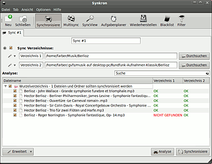
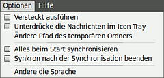
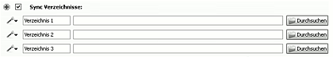

Synkron
Dieser Artikel wurde für die folgenden Ubuntu-Versionen getestet:
Ubuntu 14.04 Trusty Tahr
Zum Verständnis dieses Artikels sind folgende Seiten hilfreich:
Synkron  ist ein einfach zu bedienendes, freies Programm zur Synchronisation (Datenabgleich) von zwei oder mehr Verzeichnissen. Als Qt-Anwendung arbeitet es mit identischer graphischer Oberfläche auf verschiedenen Plattformen (Linux, Windows, Mac OS X).
ist ein einfach zu bedienendes, freies Programm zur Synchronisation (Datenabgleich) von zwei oder mehr Verzeichnissen. Als Qt-Anwendung arbeitet es mit identischer graphischer Oberfläche auf verschiedenen Plattformen (Linux, Windows, Mac OS X).
Synkron eignet sich vor allem zum Daten-Abgleich und zur Daten-Sicherung auf einzelnen Rechnern oder in kleinen Netzwerken. Die Bedienung ist weitgehend selbsterklärend und orientiert sich vor allem an den Bedürfnissen einzelner Benutzer. Für die Administration und für professionelle Anwendungen bietet Synkron keinen mit rsync oder Unison vergleichbaren Funktionsumfang.
Eine Alternative ist das portable (d.h. auch ohne Installation verwendbare) FreeFileSync.
Im Einzelnen bietet Synkron folgende Funktionen:
Übersichtliche graphische Oberfläche, auch in deutscher Sprache
Synchronisation von mehreren Ordnern
Analyse vor der Synchronisation
Tabs, um mehrere Synchronisationen gleichzeitig auszuführen
Zeitgesteuerte Synchronisationen in einstellbaren Intervallen
Wiederherstellung von Dateien, die bei der Synchronisation unbeabsichtigt überschrieben oder gelöscht wurden
"Black List" und Filter, um Ordner von der Synchronisation auszuschließen
Aufgabenplaner mit "Multisync"
Folgende Funktionen sind in Synkron nicht vorhanden:
Keine einfache Remote-Synchronisation mittels SSH oder FTP
Keine inkrementelle Synchronisation (d.h. veränderte Dateien werden immer als ganze übertragen und überschrieben)
Keine Möglichkeit, umfangreiche Dateien gepackt zu übertragen
Synchronisation erfolgt nur nach Zeitstempel; keine Überprüfung von Dateilängen oder Prüfsummen
Keine Wahlmöglichkeit für die Behandlung von Softlinks.
Aufgrund dieser Einschränkungen kann sich die Synchronisation mittels Synkron bei sehr großen Datenmengen als langsam erweisen.
Installation¶
Fremdpaket¶
Beim SourceForge-Projekt synkron werden DEB-Pakete angeboten. Die unterstützten Ubuntuversionen und Architekturen werden aufgelistet. Nachdem man sie für die korrekte Ubuntuversion und Architektur geladen hat, müssen DEB-Pakete noch installiert werden.
Hinweis!
Fremdpakete können das System gefährden.
Die neueste Version des Fremdpakets ist Synkron_1.6.0-2.i386.deb, die aktuelle Programmversion ist jedoch 1.6.2. Das DEB-Paket wurde aus einem RPM-Paket erstellt.
Nach der Installation lässt sich Synkron über den Menüpunkt "Systemwerkzeuge -> Synkron" starten.
64-Bit¶
Für 64-Bit-Systeme gibt es kein entsprechendes DEB-Paket. Man kann aber die Installation der 32-Bit-Version 1.6.0 auf 64-Bit-Systemen erzwingen, und zwar mit dem Befehl:
sudo dpkg --force-architecture -i Synkron_1.6.0-2.i386.deb
Ob die so installierte Version auf 64-Bit-Systemen stets fehlerfrei arbeiten wird, ist ungewiss.
Manuell¶
Um die aktuelle Version von Synkron aus dem Quellcode zu kompilieren, muss dieser zunächst in Form der Datei Synkron-1.6.2-src.tar.gz heruntergeladen und entpackt werden, am besten in ein Unterverzeichnis eines Sammel-Verzeichnisses im persönlichen Ordner, in dem man alle Source-Verzeichnisse aufbewahrt, von denen man manuell etwas installiert.
Hinweis:
Die in der Readme-Datei von Synkron 1.6.1 beschriebene Anleitung bezieht sich auf ältere Ubuntu-Versionen und funktioniert in Ubuntu 10.04 nicht mehr ohne Weiteres. Das hier beschriebene Vorgehen weicht von dieser Readme-Datei ab.
Synkron setzt folgende Pakete voraus, die zusätzlich installiert werden sollten:
g++
libqt4-dev
 mit apturl
mit apturl
Paketliste zum Kopieren:
sudo apt-get install g++ libqt4-dev
sudo aptitude install g++ libqt4-dev
Sobald alle vorausgesetzten Pakete installiert sind, können im Terminal folgende Befehle ausgeführt werden:
lrelease-qt4 Synkron.pro qmake-qt4 Synkron.pro make
Nachdem der Befehl make erfolgreich ausgeführt wurde, ist im Source-Verzeichnis (Synkron-1.6.1-src) die ausführbare Datei bzw. das Programm synkron zu finden.
Portable Einrichtung¶
Als Qt-Anwendung ist Synkron nur auf Systemen lauffähig, auf denen die dafür nötigen Bibliotheken installiert sind. Diese gehören nicht zur Grundausstattung von Ubuntu, sind aber alle im Metapaket
libqt4-gui
mit apturl
Paketliste zum Kopieren:
sudo apt-get install libqt4-gui
sudo aptitude install libqt4-gui
enthalten. Nimmt man diese Einschränkung in Kauf, dann lässt sich Synkron ganz einfach auf einem externen Datenträger (z.B. USB-Stick) portabel einrichten. Dafür genügt es, die ausführbare Binärdatei synkron in einen beliebigen Ordner auf diesem Datenträger zu kopieren. Sie kann dann auf jedem anderen, geeignet ausgestatteten Ubuntu-System dort direkt aufgerufen werden.
Üblicherweise legt Synkron seine Konfigurationsdateien Synkron.conf und Synkron.ini im Heimverzeichnis des jeweiligenen Benutzers im (versteckten) Ordner ~/.config/Matus Tomlein ab. Bei einer portablen Einrichtung ist dies jedoch nicht erwünscht. Dies lässt sich dadurch verhindern, dass man im selbhen Ordner, in dem sich die ausführbare Datei synkron befindet, von Hand leere, beschreibbare Dateien Synkron.ini und Synkron.conf einrichtet (bitte großen Anfangsbuchstaben beachten!). Synkron verwendet dann diese und legt im Heimverzeichnis des Benutzers keine Dateien an. Auf diese Weise hinterlässt Synkron dann keinerlei Spuren auf dem Rechner, auf dem es von einem externen Datenträger aus ausgeführt wird.

Anwendung¶
Allgemein¶
Synkron ist mit dieser Anleitung  in deutscher Sprache sehr ausführlich dokumentiert. Deshalb erübrigt es sich, hier auf alle Einzelheiten einzugehen. Erwähnt werden nur wichtige Eigenschaften, in denen sich Synkron von anderen vergleichbaren Synchronisationsprogrammen unterscheidet.
in deutscher Sprache sehr ausführlich dokumentiert. Deshalb erübrigt es sich, hier auf alle Einzelheiten einzugehen. Erwähnt werden nur wichtige Eigenschaften, in denen sich Synkron von anderen vergleichbaren Synchronisationsprogrammen unterscheidet.
Optionen¶
Die wichtigsten Optionen können im Hauptmenü von Synkron ausgewählt werden: 
Über die Schaltfläche "Erweitert" am unteren Fensterrand steht eine Vielzahl weiterer Optionen zur Verfügung. Ergänzt werden die Optionen durch Blacklist und Filter (s.u.).
Tabs¶
Sogenannte "Tabs" dienen dazu, die Synchronisationen übersichtlich zu verwalten. Jeder Tab beschreibt eine Synchronisation. Es können beliebig viele Tabs über den Button "Neu" angelegt und mit dem Button "Schließen" wieder gelöscht werden. Über "SyncView" werden alle vorhandenen Tabs zur Auswahl angezeigt.

Gleichzeitige Synchronisation mehrerer Verzeichnisse¶
Bei der Synchronisation können nicht nur zwei, sondern gleich mehrere Verzeichnisse einbezogen werden. Über das Master-Slave-Konzept ist es trotzdem möglich, auch unabhängig vom Zeitstempel differenziert Vorzugsrichtungen festzulegen.
Master-Slave-Konzept¶
Das Master/Slave Konzept ist neu in Synkron 1.6 und ersetzt das frühere Klonen-Feature der Verzeichnisse.
Normalerweise erfolgt die Synchronisation bidirektional, d.h. alle zu synchronisierenden Dateien werden auf den Stand der neuesten Datei gebracht. Mit dem Master-Slave-Konzept kann jedoch sehr differenziert für jede einzelne Datei eine Vorzugsrichtung festgelegt werden. Master- bzw. Slave-Dateien werden bei der Synchronisation untereinander jeweils gleichrangig behandelt. Dagegen hat unabhängig vom Zeitstempel (Alter) eine Master-Datei immer Vorrang vor der Slave-Datei; bei Unterschieden und Konflikten überschreiben auch ältere Master-Dateien jüngere Slave-Dateien, nie aber umgekehrt.
Multisync¶
Mittels MultiSync lassen sich mehrere Quellen in einem einzigen Ziel-Verzeichnis sichern. Dies kann vor allem für Backups nützlich sein.
Analyse¶
Die Analyse bietet eine Übersicht über alle Dateien, die bei der nächsten Synchronisation übertragen werden. Sie kann, muss aber nicht, vor der eigentlichen Synchronisation durchgeführt werden.
Aufgabenplaner¶
Mit dem Aufgabenplaner können für jedes einzelne Tab entweder feste Zeiten oder periodische Intervalle für die automatische Ausführung festgelegt werden (ähnlich einem Cron-Job). Wichtig: Der Aufgabenplaner ist nur dann aktiv, wenn Synkron im Hintergrund läuft. Möchte man, dass Synkron die geplanten Aufgaben automatisch im Hintergrund ausführt, empfiehlt es sich, das Programm dafür mit der Option "Versteckt ausführen" per Autostart zu starten.
Blacklist¶
Durch die Blacklist können bestimmte Dateien, Verzeichnisse oder Erweiterungen von der Synchronisationen ausgeschlossen werden.
Filter¶
Durch die Nutzung von Filtern werden nur Dateien mit zuvor definierter Erweiterung bei der Synchronisation berücksichtigt. Es können mehrere Filter erstellt, benannt, gespeichert und bei Bedarf aktiviert werden.
Hinweis:
Betätigt man den Schließen-Button in der Kopfleiste des Multysync-Fensters, bleibt das Programm im Hintergrund aktiv, sodass der Aufgabenplaner weiterhin ausgeführt wird. Zum vollständigen Beenden des Programms dient der Menü-Eintrag "Datei -> Schließen".
Synchronisation über ein Netzwerk¶
NFS und Samba¶
Synkron kann in gleicher Weise auch Netzwerk-Ordner synchronisieren, die ins lokale Netzwerk eingebunden (gemountet) sind (siehe NFS und Samba Client cifs). Bei Samba können Probleme mit dem Zeitstempel entstehen (s.u.).
Bei Samba-Freigaben, auf die über GVFS oder KDE/Konqueror zugegriffen wird, kommt Synkron mit der Syntax smb://<Server>/<Freigabe> nicht zurecht. In GNOME ist aber der alternative Zugriff über gvfs-mount möglich. In KDE ist der Zugriff erlaubt, wenn die Freigabe zuvor mit dem Programm Smb4K im Verzeichnis ~/smb4k eingehängt wurde.
SSH (SFTP) und FTP¶
Einen direkten Zugriff auf entfernte Dateien über SSH oder FTP, wie er in rsync und Unison möglich ist, bietet Synkron nicht. Es ist aber auch hier möglich, die entfernten Dateien mittels sshfs bzw. curlftpfs ins lokale Dateisystem einzubinden und dann mit Synkron darauf zuzugreifen. Werden die Dateien hingegen über GNOME/Nautilus eingehängt, muss der Zugriff wieder wie im vorherigen Abschnitt beschrieben erfolgen.
Problembehebung¶
Windows-Partitionen¶
Problem: Beim Kopieren von Ordnern und Dateien auf und von Windows-Partitionen (Dateisysteme VFAT oder NTFS) bleibt der Zeitstempel nur dann erhalten, wenn der Besitzer der Datei gleich bleibt. Externe Laufwerke werden jedoch standardmäßig nicht als Besitz des jeweiligen Benutzers, sondern als Eigentum von Root eingebunden. In diesem Fall ist nach dem Kopieren einer Datei meist die Kopie scheinbar neuer als das Original. Weil Synkron allein nach dem Zeitstempel entscheidet, in welche Richtung Dateien zu erneuern sind, kann es in diesem Fall bei Synchronisationen zu einem unsinnigen Hin- und Herkopieren identischer Dateien kommen.
Lösung: Das Problem stört vor allem beim bidirektionalen Synchronisieren mittels "sync". Es lässt sich nur dadurch umgehen, dass die Windows-Partitionen als Besitz desjenigen Benutzers eingebunden werden, dessen Dateien synchronisiert werden sollen (siehe dazu Windows-Partitionen einbinden). Bei der unidirektionalen Datensicherung mittels "multisync" ist der Verlust des Zeitstempels oft belanglos. Ab der Version 1.6 lässt sich das Problem auch durch die Festlegung von Vorzugsrichtungen mittels Master-Slave-Konzept entschärfen.
Samba¶
Problem: Bei Samba sind die Verhältnisse ähnlich wie bei eingebundenen Windows-Partitionen. Zeitstempel werden nur über die cifs-UNIX-Extensions korrekt übertragen (siehe hier). Diese werden aber von Windows-Rechnern generell nicht unterstützt.
Lösung: Bidirektionale Synchronisation mittels "sync" ohne Master-Slave-Konzept ist über Samba nur bei gleich bleibenden Besitzern der Dateien oder bei aktiven UNIX-Extensions sinnvoll (Näheres dazu siehe hier).
Zeitzonen, Winter- und Sommerzeit¶
Synkron verwendet Zeitangaben wie angegeben und rechnet nicht etwa auf Normalzeit zurück. Dies kann beim Wechsel von Zeitzonen oder beim Übergang zwischen Winter- und Sommerzeit Probleme machen.
Portable Verwendung auf älteren Systemen¶
Versucht man, eine portabel eingerichtete Binärdatei von Synkron auf einem Ubuntu-System zu starten, das älter ist als das System, auf dem sie kompiliert wurde, ist es möglich, dass sie dort nicht startet (Segmentation fault).
Links¶
Datensicherung
 Übersicht zu möglichen Methoden und Programmen
Übersicht zu möglichen Methoden und Programmenrsync - Das mächtige Standard-Werkzeug von Linux zur unidirektionalen Synchronisation und Datensicherung. Arbeitet durch inkrementelle Synchronisation und optionale Kompression sehr schnell.
Unison - Ausgereiftes grafisches Werkzeug zur bidirektionalen Synchronisation (verwendet den rsync-Algorithmus).
FreeFileSync - Eine einfache, intuitive und sehr übersichtliche Alternative.
- Erstellt mit Inyoka
-
 2004 – 2017 ubuntuusers.de • Einige Rechte vorbehalten
2004 – 2017 ubuntuusers.de • Einige Rechte vorbehalten
Lizenz • Kontakt • Datenschutz • Impressum • Serverstatus -
Serverhousing gespendet von